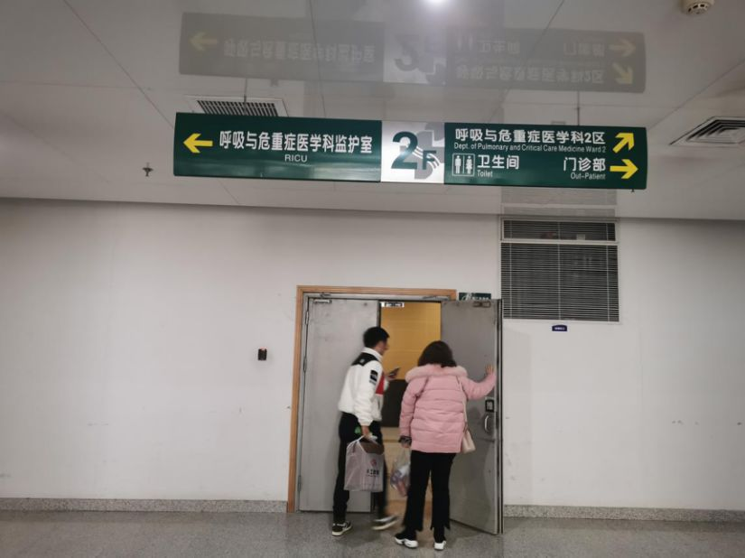

武汉新增病例0增长的12天，发生了什么？
原文链接 备份链接 27.01.2020本文字数：3361，阅读时长大约6分钟 导读：自1月6日开始到17日，武汉新冠肺炎12天未报告一例新增病例，并在较长时间内一直强调“未发现明确的人传人的证据”，在相当程度上导致社会各界缺乏警惕、疏 …

本报记者 张家振 武汉报道
“今天核酸检测结果阳性，尘埃落定，终于确诊了。”2月1日上午10时41分，疫情“吹哨人”李文亮对外界宣布了这一消息。李文亮是武汉市中心医院的一名眼科医生，因最早于2019年12月30日向外界发出防护预警，而被称为疫情“吹哨人”。
2月1日下午，李文亮在接受《中国经营报》记者采访时表示，已经答应家人安心养病，暂不接受媒体采访。目前其正在武汉市中心医院接受隔离治疗。
此前一天的1月31日，北京感恩公益基金会拨付“守护者后盾行动”项目成立以来的第一笔10万元“特别贡献支持”款项，受益人正是李文亮。据该基金会负责人周健介绍，款项主要用于资助在本次抗击疫情中有突出贡献的人员，“他的行为客观上让更多人对病毒有了提前的防范”。

（武汉市中心医院医生李文亮）

善意的防护提醒
武汉市中心医院后湖院区，是距离华南海鲜市场最近的三甲医院，直线距离不超过1.5公里。在最早一批感染新型冠状病毒肺炎的商户患者中，大多在周边诊所及社区医院治疗未见好转后，前来武汉市中心医院后湖院区就诊，这也让包括李文亮在内的医生最早接触患者、获得相关诊断信息。
早在2019年12月31日下午，记者曾来到武汉市中心医院后湖院区探访，多位医务人员向记者证实，昨天（12月30日）夜里确实收治过几位疑似肺炎病人。最初是在门诊一楼的急诊外科病房，已经转到二楼了。记者当时在一楼看到，急诊外科病房已大门紧闭，门上贴有“此门不通”的告示。

（武汉市中心医院后湖院区呼吸与危重症医学科，照片摄于2019年12月31日。摄影/本报记者 张家振）
据李文亮回忆，2019年12月30日下午5点多，他在武汉大学临床04级班级群里发布消息说“华南海鲜市场确诊了7例SARS”，提醒同为临床医生的同学“让家人亲人注意防范”。李文亮也由此成为最早向外界发出防护预警的人之一。
为了证明自己所言不虚，李文亮还在群里发出了一份写有“检出高置信度阳性指标 SARS冠状病毒阳性”的临床病原体筛查结果和患者胸部CT。一个小时后，他在群里补充称：“最新消息是冠状病毒感染确定了，正在进行病毒分型。”
同一天，武汉市卫健委印发的《关于做好不明原因肺炎救治工作的紧急通知》开始流传，肺炎疫情首次进入公众视野。该通知特别强调“未经授权任何单位，个人不得擅自对外发布救治信息”。
在向同学发出善意的防护提醒后，李文亮的工作、生活一切如常。身为眼科医生的他，在接诊、治疗一位82岁的急性闭角型青光眼患者过程中，因大意没有做防护而暴露在了病毒之下。
据李文亮描述，1月8日左右自己收治的眼疾患者体温正常，只是食欲不佳，并没有呈现出新冠肺炎常见的发热症状。第二天患者还是食欲不好，中午发热了，查肺部CT提示是“病毒性肺炎”，其他的各项指标都符合不明原因肺炎的标准。
1月10日、11日，李文亮出现咳嗽、发热等症状；12日因发烧、肺部感染住进隔离病房，成为疑似病例，但一直未获确诊。此后，李文亮因病情加重转至武汉市中心医院呼吸内科重症监护室接受治疗。
据了解，李文亮目前呼吸困难，插着氧气管，不能起床、说话，通过打字与别人交流，“每天都要打抗生素、抗病毒，球蛋白和吸氧。”
“敢于说出事情真相的人”
李文亮，籍贯辽宁省锦州市北镇市，今年34岁。2004 年李文亮参加高考并报考武汉大学临床医学七年制专业，在厦门短暂工作3年后，重返武汉在武汉市中心医院工作至今，顺理成章地开启了留在武汉工作、生活的历程。
“我的妻子是其他医院的眼科医生，孩子才5岁。现在妻子带着孩子在丈母娘家生活。”李文亮在接受媒体采访时表示，现在每天都和爱人微信聊天、视频，他们也会给我加油鼓励。
收治的眼科病人在诊断出现“双肺磨玻璃样病变”，属于病毒性肺炎后，照顾她的家属和女儿也先后出现了发热症状。这让李文亮更加确信“明显存在人传人”，不过，此时的他因隔离治疗或其他原因，并没有继续向外界传达预警信息。
据李文亮在接受《财新》采访时介绍，这是明显的人传人。我们就立刻上报到医务处和院感办公室了，请了院内专家组会诊，会诊后建议患者在我科隔离治疗。三天后，我们又给他做了复查 CT，结果还是“病毒性肺炎”，而且范围扩大，病情加重了，接着患者就转到呼吸内科隔离病房，之后的情况我就不知道了。
而在李文亮出现发热等不适后，其同科室的同事在之后的一两天也出现了感染情况，父母在三四天后也相继出现了发热等症状，肺部CT呈现磨玻璃样病变而住院治疗。据李文亮介绍，他们正在武汉其他医院接受治疗，现在都挺好的，没有大碍，应该近期就可以出院。
根据武汉市卫健委1月11日通报，对外口径仍为“目前未发现医务人员感染，未发现明确的人传人证据”。“那时候我还在想通报怎么还在说没有人传人，没有医护感染。”李文亮表示。
直到1月20日晚间，中国工程院院士、国家呼吸系统疾病临床医学研究中心主任钟南山首度向外界表示，新型冠状病毒肺炎肯定存在人传人的现象，并向外披露了“14个医务人员感染”的事实。
李文亮的事迹也受到了北京感恩公益基金会等公益组织的关注。1月31日21点，该基金会“守护者后盾行动”项目向李文亮拨付第一笔10万元“特别贡献支持”款项。支持理由是：他是一个对工作负责的、真实而敢于说出事情真相的人。他的行为客观上让更多人对病毒有了提前的防范。
据周健介绍，截至2月1日21:00，“守护者后盾行动”项目组工作人员及志愿者正在与22名初步符合资助条件的受助对象本人或家属进行联系，其中包括特殊贡献医生3人、医护人员8人、警察和辅警9人和基层干部2人。
“他们很多都曾是奋战在抗击疫情第一线的英雄，有的已经献出了宝贵的生命，有的已经不幸感染，有的仍在一线奋战。”“守护者后盾行动”项目组表示，为所有因公参加2020年抗击“新型肺炎”工作人员（包括不限于医务人员、检疫人员、检查人员、媒体记者等）在救援中致病、致残甚至不幸殉职，提供无偿的人道援助，项目资助内容包括生活补助、治疗支持、教育支持、特别抚恤、赡养支持和特殊贡献支持等。
“我一定积极配合治疗，争取早日出院。”李文亮表示，康复后我想赶快回到一线工作，继续为患者看病。
（编辑：曹学平 校对：翟军）

推荐阅读

点击大图 | 湖南援鄂护士在武汉金银潭医院ICU五日记丨新冠肺炎亲历
点击大图 | 特写丨驰援武汉：一位中国机长的三个半小时****

原文链接 备份链接 27.01.2020本文字数：3361，阅读时长大约6分钟 导读：自1月6日开始到17日，武汉新冠肺炎12天未报告一例新增病例，并在较长时间内一直强调“未发现明确的人传人的证据”，在相当程度上导致社会各界缺乏警惕、疏 …
原文链接 备份链接 1月23日凌晨2点“交通封城”令公布时，张奇还在刷手机。 张奇是北京人。1月20日，他坐高铁到武汉来探望朋友。此前媒体已经零星有了关于武汉新冠肺炎的报道，而病例数据在20日急速增加了2倍，危重患者已经有44人。不 …
原文链接 备份链接 “我在家族群里说，科室工作群里每天都有很多接诊信息，护士长已经连续工作48小时，还有护士生病了。选择当医生、当护士肯定是有风险，但我会做好防护。我返回岗位继续工作不是为了当英雄，但是不能做逃兵。” 全文2771字，阅读 …
原文链接 备份链接 记者/ 佟晓宇 编辑/宋建华 会诊中的童朝晖（右一） 新型肺炎与SARS有何区别？治疗难度如何？幼儿和青年不易感染？易感人群又存在哪些特征？抗艾滋药对新型肺炎临床治疗真的有效吗？ 针对新型冠状病毒治疗的一系列问 …
原文链接 备份链接 特约撰稿 李梦琪 本报记者 郭阳琛 石英婧 上海报道 “我比很多同事都幸运，除夕是在家过的。”已经在抗击疫情一线连续奋战了二十多天，除夕夜能和家人在一起度过让武汉市肺科医院隔离病区护士吴青（化名）格外欣慰。 由于武汉疫 …